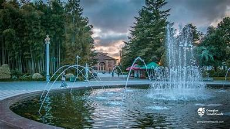

ბათუმი
ბათუმი — ქალაქი და მუნიციპალიტეტი საქართველოში, არის აჭარის ავტონომიური რესპუბლიკის ადმინისტრაციული ცენტრი. ბათუმი არის მოსახლეობის რაოდენობით მეორე ქალაქი საქართველოში, ასევე მნიშვნელოვანი სამრეწველო, კულტურული და ტურისტული ცენტრი საქართველოში.!
ნინო და ალის სკულპტურა

ალი და ნინო — ყურბან საიდის პოპულარული აზერბაიჯანული რომანია. ნაწარმოებში მოთხრობილია ორი ბაქოელის აზერბაიჯანელი-მუსლიმი ალი ხან შირვანშირისა და ქართველი-ქრისტიანი ნინო ყიფიანის სიყვარულის ისტორია.
ბათუმის ბოტანიკური ბაღი

ბათუმის ბოტანიკური ბაღი — ბათუმში, მწვანე კონცხზე, შავი ზღვის სანაპიროზე, გაშენებულია 111 ჰა ფართობზე.